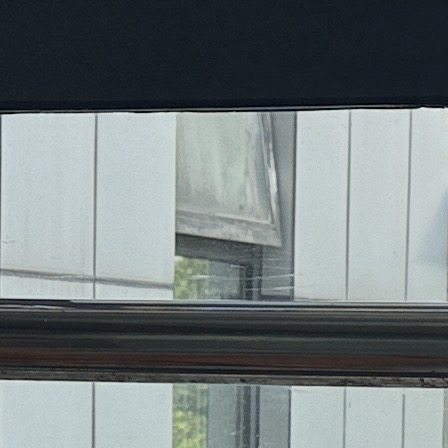
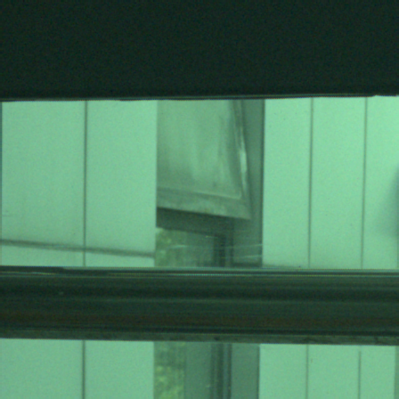
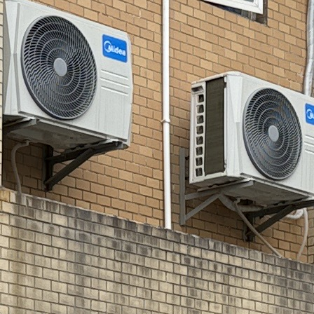
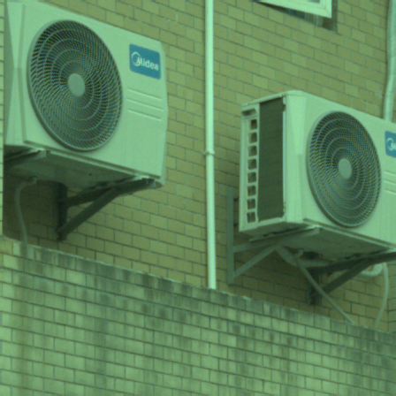
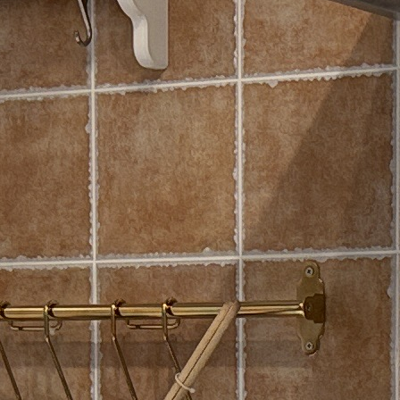
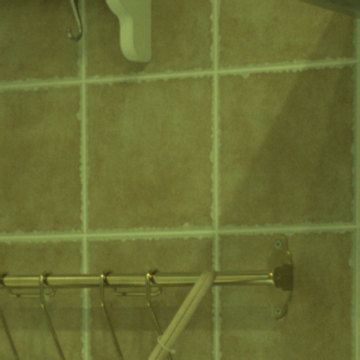
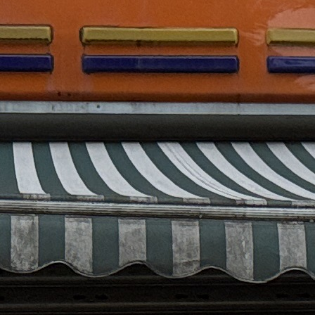
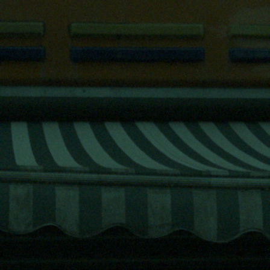
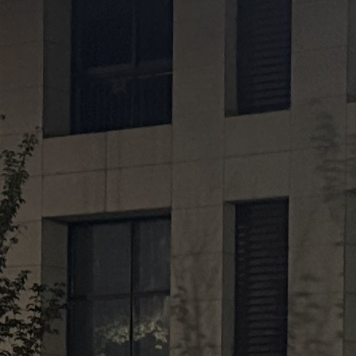
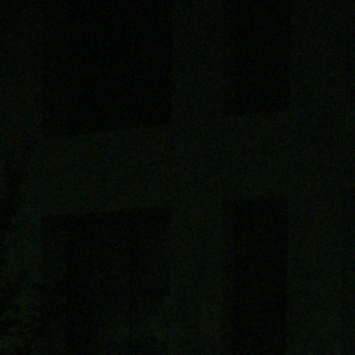

DATASET & BENCHMARK
LC-ISP
Learning Advanced ISP with
Live and Capture Streams
Aligned data from two imaging streams of the same camera. Learn from single-frame RAW inputs, live previews, fused ProRAW intermediates, and capture-stream reference images.
- Training samples
- 48,546
- Validation samples
- 5,400
- Aligned files per sample
- 4
EXPLORE THE DATA
RAW to reference.
Drag the divider to compare each pair.
Fully left: Reference. Fully right: RAW.


RAWReference

RAWReference

RAWReference

RAWReference

RAWReferenceExamples from the validation split. RAW images are demosaiced with a fixed display transform.
THE BENCHMARK
Live and capture streams.
The same camera, different processing budgets.
Aligned supervision across the imaging pipeline.
The live stream processes a single RAW frame for real-time preview. The capture stream uses multi-frame fusion and a larger processing budget to produce its reference image.
LC-ISP pairs these streams and provides ProRAW intermediates, supporting both end-to-end ISP learning and supervision of individual processing stages.

GET STARTED
Work with LC-ISP.
48,546 training samples.
5,400 validation samples.
To provide a more challenging evaluation, we have re-partitioned the dataset into new training and validation splits.
Download the dataset
Download all nine TAR archives, the two ID lists, the two metadata JSON files, and extract.sh into the same directory.
Extraction code j4g6
Extract and train
bash /path/to/LC-ISP-data/extract.shUse the extracted directory as the dataset path. The validation split is stored under the test filenames and directory.
| RAW image | ProRAW image | Preview image | Reference image |
|---|---|---|---|
<id>.raw | <id>_pro.raw | <id>.png | <id>_pro.png |
Dual-Stage ISP combines RestorationNet and EnhancementNet, with Base, Medium, and Lite configurations.
Explore the code